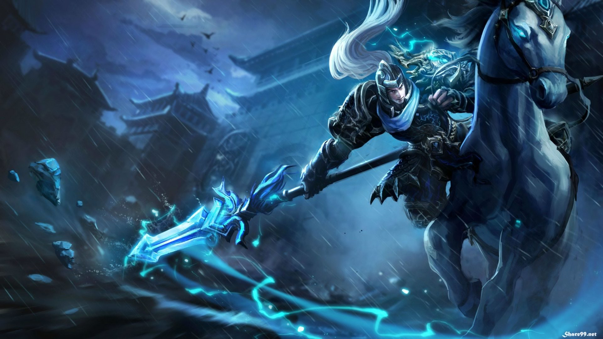

*ASSASSINS
A champion who specializes in killing one champion as fast as possible. On mobafire it is quoted that these champions go after the enemy's AD/AP Carry
and other 'squishy' champion. These champions are usually strong and can be tough to kill if they are fed. An example of champions who are an assassin are Ahri,
Akali, Fizz, Katarina, LeBlanc and Zed.
*MARKSMAN
Marksman is usually weak in the beginning, but can become really strong towards the end. Marksman can 'carry' the team to victory. These champions are usually high team DPS with a high amount of Maneuverability/ escaping ability, making it easier to get very positive kill/death ratios. Examples of a Marksman are Ashe, Miss Fortune, Varus and Vayne.
*FIGHTER
Champions that blend the attributes of a damager and tank, combing moderate to heavy survivability with the damage of assassin or carry. These Just like any other champion they can get really strong if fed a lot. An example of a fighter are Jax, Jayce, Nunu and Wukong.
*SUPPORT
Champions whose skills are meant to directly aid the rest of the team. They can either babysit a champion to make landing easier for them by providing healing, bugging allies, applying the buffs to the enemy team, or a combination of the above. The most common ability for a support champion is providing an ally with a shield of some kind. One of the main goals of a support is to let their lane partner farm minions for gold, as supports can by key gold plus items to get gold for themselves, as well as controlling the map with wards, warding all key areas of the map. These champions usually rely on their skills more than there auto-attack. Example of support Champions are Nami, Soraka, Zilean.
*MAGE
Champions with powerful magic damage skills or support skills but low defense. some are meant to deal a high amount of damage in a short period of time (burst mages) while others usually deal damage over time. Like carry champions, they can bring their team to victory due to their ability power, but tend to fall off in the very late game. Examples of mage Champions are Annie, Lux, Rumble and Swain.